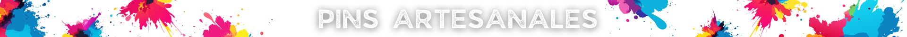
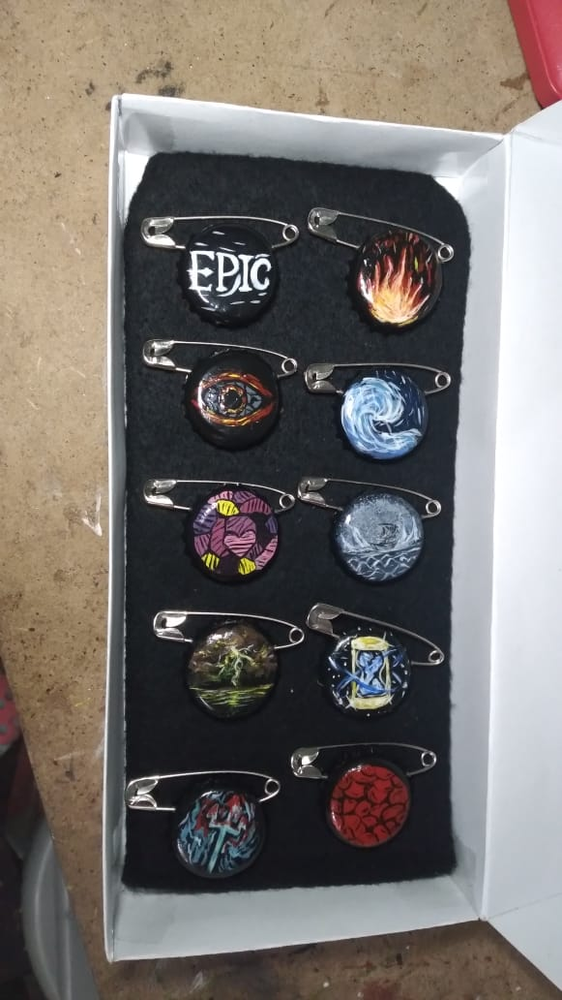
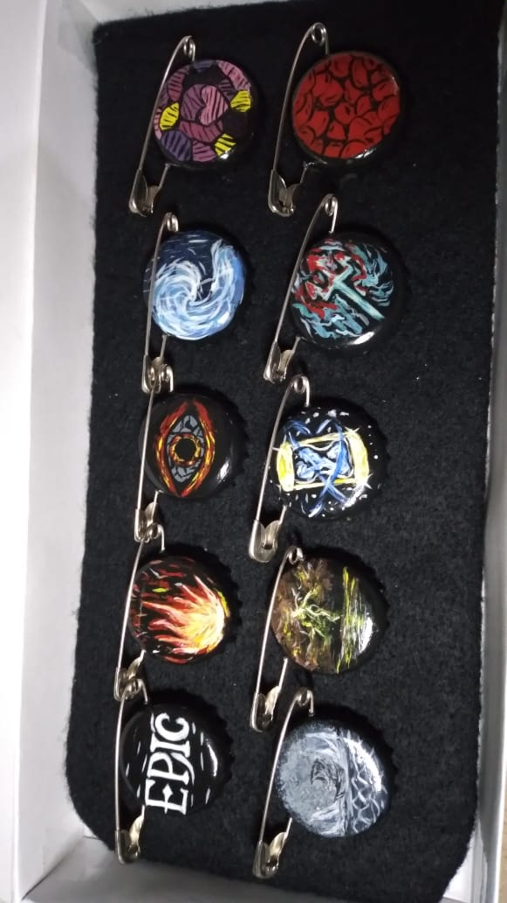
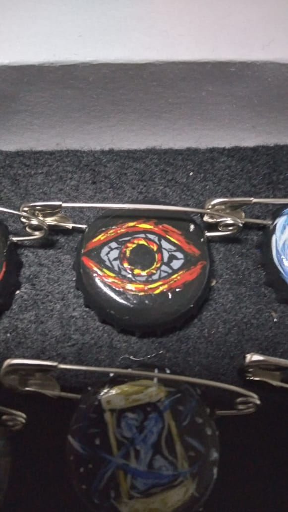
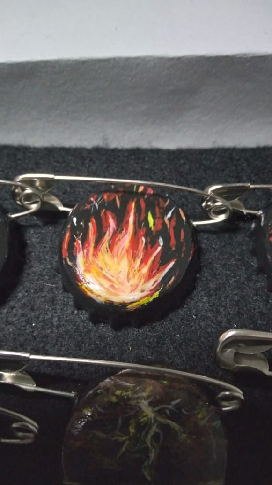
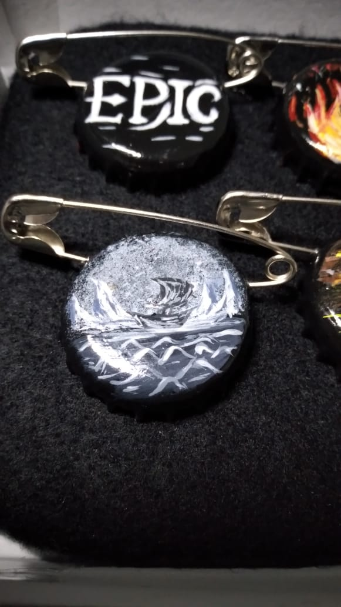

Pins Artesanales

Hola bienvenido a este pequeño catalogo, en esta area veras algunos ejemplos de los pins artesanales.
Estos son hechos a mano por la artista Joselyn Duran Mercado, estan creados a bse de pintura acrilica,
tapaderas de metal (de los enbases de coca-cola de vidrio), y esmalte transparente
 
  